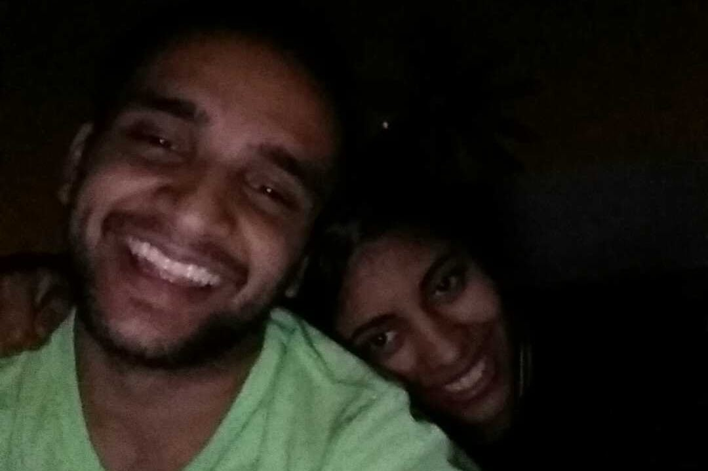
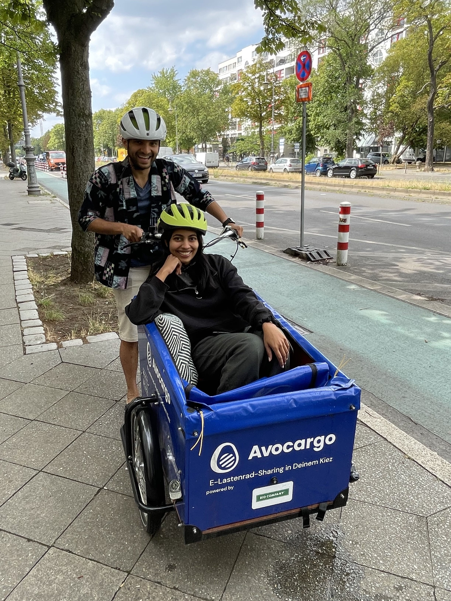
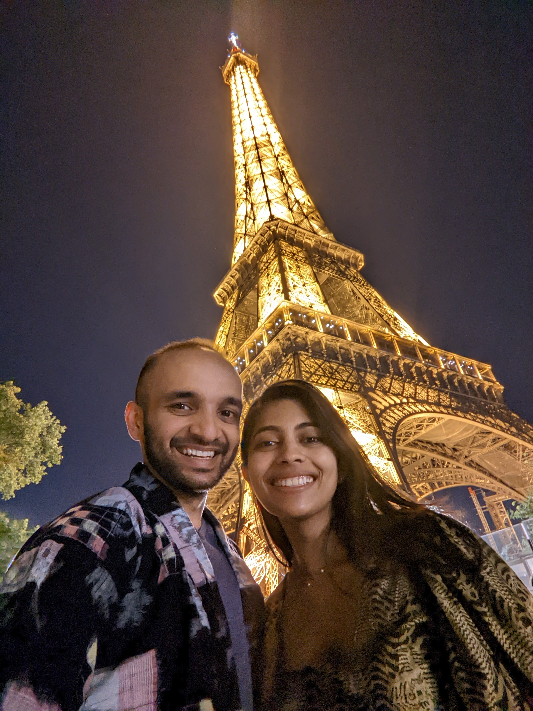
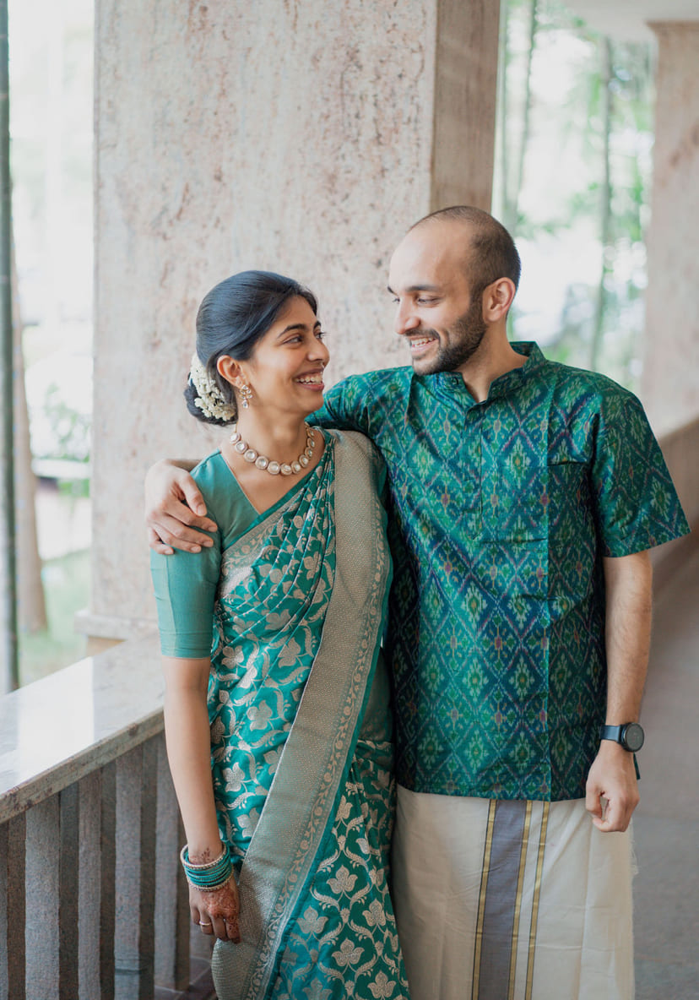
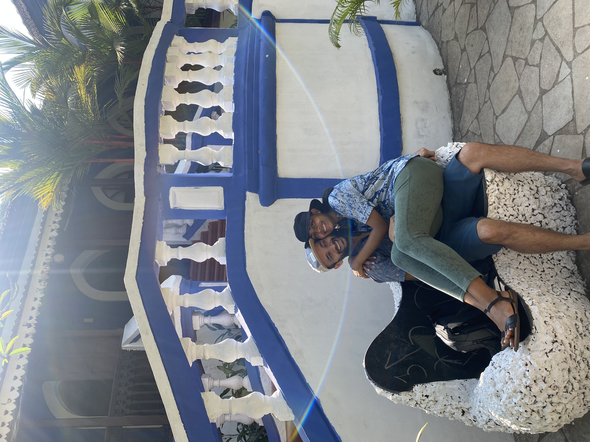

Our paths first crossed as undergrads in the US — Anjali living an artistic life in Brooklyn, Jayant being an engineering nerd in upstate New York. We met occasionally when Jayant was passing through NYC or when the fellowship supporting their education held its annual conference. We became fast friends, but never more.

Conversations were few and far between after undergrad. Anjali hit the hustle of the design consultant world — chugging bad coffee, jet-setting across continents. Jayant moved to the West Coast, still studying and chugging coffee too, the hipster, funky kind.
The fateful reconnection is a tale as old as the modern European summer fling. Jayant was living and working in Berlin when he got a message from Anjali, who was planning a three-month visit to meet her colleagues there. We spent most of that summer together — train rides across Europe, Jayant ferrying Anjali on cargo bikes, and yes, a couple of romantic nights in Paris where we first kissed.


The magical summer ended and gave way to two years of long distance — Anjali back in NYC, Jayant continuing in Berlin. We found ways to meet every few months, including a magical few weeks in Goa that planted the seed for this wedding's location.


We were finally reunited when Jayant moved back to the US and we found our first apartment together — a sunlit corner apartment in a lovely Brooklyn neighbourhood. Before long we knew we wanted to build a life together. Jayant proposed by the lake in Central Park, a spot Anjali had recently painted. Anjali, not to be outdone, proposed back with a comic about their relationship after a bike ride at the Storm King Art Center. Both proposals lead here — a celebration with you, our family.